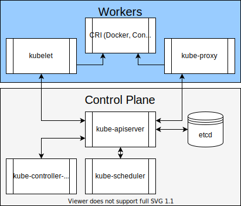
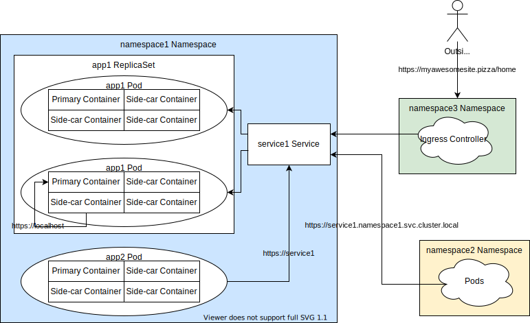

Docker and Kubernetes
Dewvelopers
December 3rd, 2020
Brendon Thiede
- DevOps Platform Engineer
- Automation junkie
- Constant hacker
Docker
One of many containerization options
Containerization
- Process isolation/sandbox
- Shared kernel
- Idempotent by default
Layers
Cached, but at a cost
(to varying degrees)
Base Images
Excellent reuse
Single Process
Usually...
Stages
Only push what you need
Wasteful Example
FROM maven:3.6.3-openjdk-11
WORKDIR /var/www/java
COPY . /var/www/java
RUN mvn package
RUN mv spring-boot-app-*.war /app.war
CMD ["/usr/bin/java", "-jar", "/app.war"]
Better Example
FROM maven:3.6.3-openjdk-11 as builder
WORKDIR /tmp/java
COPY . /tmp/java
RUN mvn package
RUN mv spring-boot-app-*.war /app.war
FROM openjdk:11-jre-alpine
COPY --from=builder /app.war /app.war
CMD ["/usr/bin/java", "-jar", "/app.war"]
Single Target OS
Actually build once and deploy everywhere
Other Considerations:
- Bind mount and Volumes
- Mind the file permissions and ownership
- Port forwarding
- Environment variables
- Container registry options
Kubernetes
Collection of APIs focused on
Container Orchestration
Kubernetes Architecture

Common Kubernetes Resources

Common Kubernetes Resources
- Namespace - Organizes resources
- Deployment - Keeps track of a Replica Set and Pod
- Replica set - Manages scale (number of copies) of the Pod
- Pod - One or more containers providing the main attraction
- Service - Exposes a Pod to the rest of Kubernetes
- Ingress - Exposes a Service outside of Kubernetes
Where can the network break?
- Traffic to external load balancer
- Traffic to worker load balancer
- Ingress rule
- Namespace access
- Pod readiness
- Connections to other services
Creating Resources
Imperative
kubectl create namespace playground
Creating Resources
Declarative
cat <<EOF | kubectl apply -f -
apiVersion: v1
kind: Namespace
metadata:
name: playground
EOF
Scaling
- Replicas spec
- Can be edited on after deployment
- Manual scaling
- Auto-scaling
- Needs good readiness probe and "fast" startup
Scheduling
- Keep things apart
- Keep things together
- May be a candidate for a side-car
- Reserve specific hardware
- Bring node down for maintenance
Scheduling Configuration
- taints and tolerations
- node/pod affinity and node/pod anti-affinity
- These leverage labels and selectors
- cordon, drain, and uncordon
Misc
- Service mesh
- Cluster federation
- Distributed tracing
- GitOps
- Custom Resource Definitions (CRD)
- Helm
- Draft and Tilt